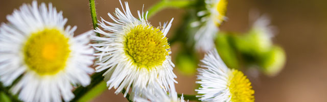

Интернет магазин цветов
Aliquam erat volutpat. Pellentesque tristique ante ut risus. Quisque dictum. Integer nisl risus, sagittis:
Цветы радости
Рома́шка — род однолетних цветковых растений семейства астровые, или сложноцветные, по современной классификации объединяет около 70 видовневысоких пахучих трав, цветущих с первого года жизни. Наиболее известный вид — Ромашка аптечная, это растение широко используется в лечебных и косметических целях.